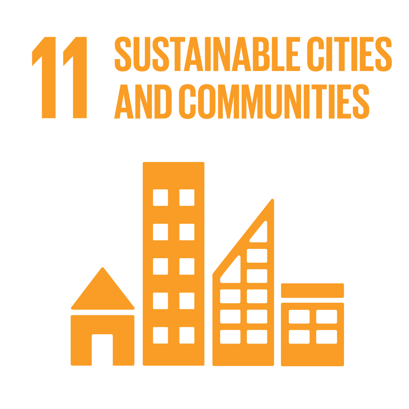
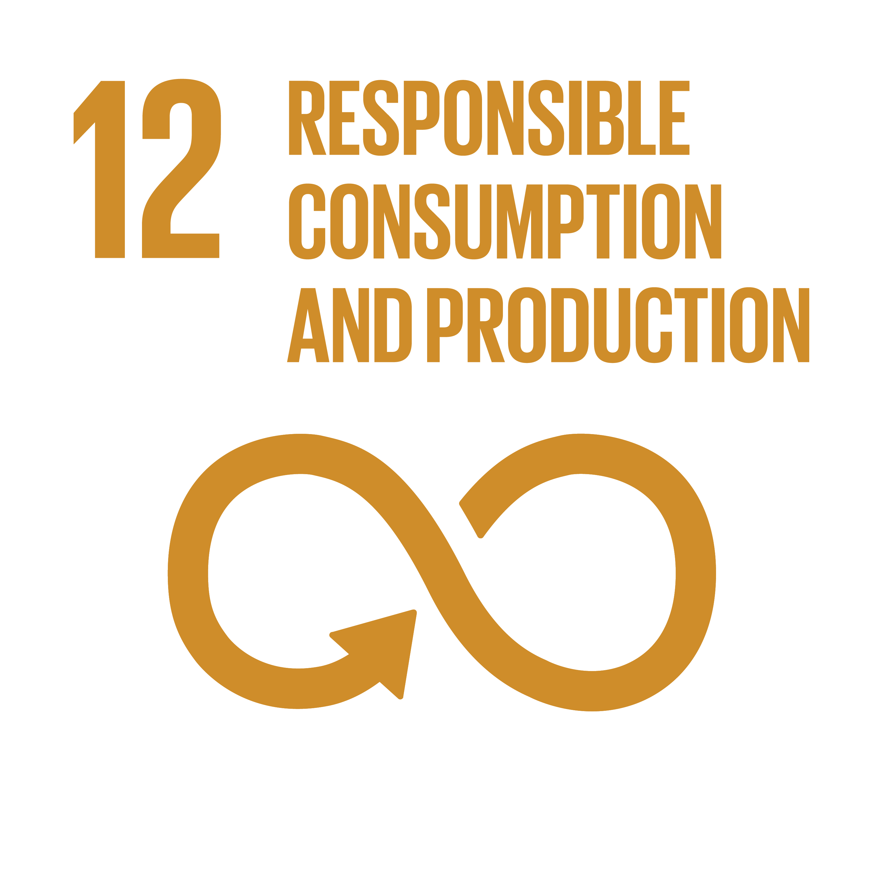
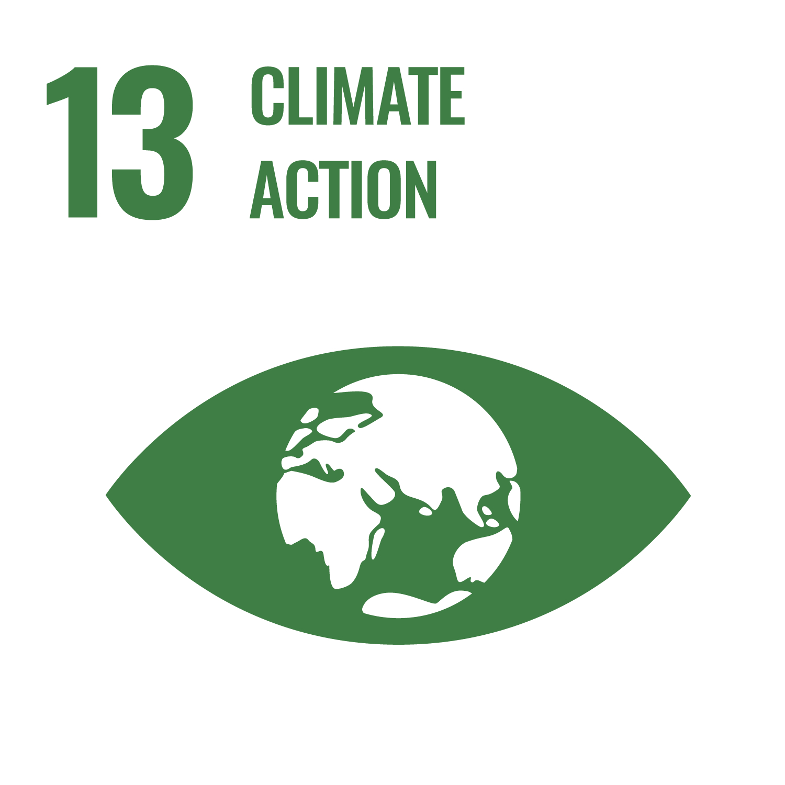

Our Mission & Vision
Mission:
To revolutionize urban waste management using smart IoT technology
to enhancing sustainability and cleanliness in cities.
Vision:
A future where waste overflow is eliminated, cities stay clean, and waste collection is efficient.
Key Features
🧠 IoT-Powered: ESP32 and ultrasonic sensors
📍 GPS Tracking: route checking and locate bin location
🌐 Cloud Dashboard: monitor fill levels and location
💡 LED Alert System: indicators when bins are full
🔋 Low-Cost: make it affordable to customer satisfaction
Why Choose Us?
✅ Affordable product with smart waste solution
✅ Simple website interface
✅ Strong alignment with SDGs


